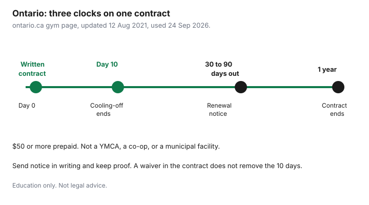

Subscriptions · Canada
Ontario Gym Cooling-Off Rights: Cancel Within 10 Days and Avoid Bad Contracts
Ontario gives you a short, real exit on many prepaid gym contracts. The province’s page on joining a gym or fitness club says that if you pay $50 or more in advance for a personal development service, the Consumer Protection Act applies, and you can cancel within 10 days of receiving a written copy of the contract. You do not need a reason. You do need notice, and you need proof you sent it.
This is Ontario only. Other provinces write their own rules. It is education, not a legal opinion. A specific club’s phone tree, including GoodLife, is the GoodLife cancel guide. The statutory rights below sit on top of that script when they apply. A contract cannot sign them away.
Disclosure: This guide has no natural affiliate offer. Saving Optimizer does not sell legal services, debt collection help, or gym contracts. Education only. Not legal advice. Confirm the current page at ontario.ca before you rely on a deadline.
Key takeaways
- Ontario: a prepaid gym membership of $50 or more is a personal development service. You may cancel within 10 days of receiving the written contract, without a reason.
- Give notice in writing and keep proof. Ontario lists email, hand delivery with a signed receipt, and registered mail. A phone call should still be noted, and writing is safer.
- Contracts must end after one year. A renewal notice has to arrive at least 30 days, and not more than 90 days, before the end. Silence can renew the contract if that notice was proper.
- Initiation fees cannot be more than twice the annual membership fee. The club must offer monthly instalments, and may charge up to 25 percent more than paying up front.
- The Act does not apply to a not-for-profit such as the YMCA, a member-owned club, or a municipal or provincial facility. Use the 10 days to actually try the club.
CPA personal development services: $50+ prepaid gyms get a 10-day cooling-off
Ontario.ca, “Joining a gym or fitness club,” updated 12 August 2021 and used for this draft on 24 Sep 2026, is the plain-language page. Prepaid services of this kind are personal development services under the Consumer Protection Act. The page names gyms, sports clubs, martial arts, and dance classes. If the membership contract requires you to pay $50 or more in advance, the Act’s protections described on that page apply. Under $50, do not assume this cooling-off exists. Read the contract anyway.
The cooling-off is 10 days from receiving a written copy of the contract, not 10 days from the tour and not 10 days from the first workout unless that is also when you received the contract. You do not need a reason. The page says you may use the facility during those 10 days. A clause that waives the cooling-off is not effective. Ontario says contracts cannot include sections that ask you to give up basic consumer rights, and it gives the cooling-off as the example.
You can also cancel within one year if the contract is missing information the Act requires: full names and the club’s address, a description of the services, cancellation and renewal conditions, the total you will pay and the payment schedule, start and end dates for each service, and the dates the contract begins and ends. That one-year right is for a defective contract. The 10-day right is for any covered contract, even a complete one. The statute is the Consumer Protection Act, 2002. This guide follows the province’s consumer page. If the dates are close or the club disputes receipt, a legal clinic or the provincial complaint path is the next step, not a louder email.
How to give written notice and keep proof of delivery
Ontario lists three written methods and treats them as the ones to prefer. Email the cancellation letter. Hand-deliver it and get a signature on a delivery receipt. Send it by registered mail. If you only phone, write down the date, the number, and what was said, and still send writing the same day. The page says it is always best to cancel in writing so you can keep proof of the date.
The letter can be short. Your name, the club’s name, the date you received the written contract, a sentence that you are cancelling under the cooling-off, and the date of the letter. Attach the contract or quote its date. Keep the sent email, the registered-mail receipt, or the signed delivery copy. Ask for written confirmation of the cancel and of any refund. Do not return a key fob and walk out with no paper. If money already left your account, the letter should ask for it back. A pre-authorized debit that continues after a valid cancel is a separate problem. The payment-method steps are the PAD guide. Cancelling the debit does not replace this notice.

Contracts must end after one year; renewal notice rules (30 to 90 days)
Ontario says all of these contracts must end after one year. A renewal is allowed only if the club follows the rules on the page. It must send a renewal notice at least 30 days, and not more than 90 days, before the contract expires, and it must give you a copy of the contract that clearly notes every change. If you received that notice and you do not respond, the club may renew and bill you under the renewed contract. Silence is not safety when the notice was done properly. Put the notice deadline on a calendar when you join, about 90 days before the end, so a letter in month ten is not a surprise.
If the membership is renewed without that notice, Ontario says it is not a valid contract. You may cancel, and you may demand the return of money paid after the original contract ended. That demand should be in writing, with the original end date and the payments you made after it. This is the clause that matters in month thirteen, long after the cooling-off is over. A club that “rolls you forever” without a proper notice is not describing the rule on the provincial page.
Initiation fee caps and monthly instalment rights
Two money rules sit next to the cooling-off, and sales desks rarely volunteer them. Ontario says the total initiation fee cannot be more than twice the total annual membership fee. If the annual fee is $400, initiation above $800 does not match that cap. Ask for both numbers on the contract before you sign. A “today only” admin fee that blows past the cap is a reason to leave the desk, not a reason to initial the box.
The club must also let you pay membership and initiation in monthly instalments. It may charge up to 25 percent more than the total would have been if you paid up front. There is a trade-off the page itself names: instalments can cost more, and they limit how much you lose if the club fails, because the money is not all in the club’s account. Pre-sold memberships, before a club is open, have to be held by a registered trust corporation, unless you agree in writing to use another facility until opening. If you agree to that other facility, the page says you have only 10 days from the date you start using it to cancel.
| Rule | Limit on the provincial page | Labelled check |
|---|---|---|
| Cooling-off | 10 days from the written contract, $50 or more prepaid | Received 1 March. Send notice so delivery is provable inside the 10 days, not on the last evening. |
| Initiation | Not more than twice the annual membership fee | Annual fee $480. Initiation above $960 does not match the cap. |
| Instalments | Must be offered. Up to 25 percent more than paying up front | Up-front total $600. Instalment total above $750 does not match the cap. |
| Length | Contract ends after one year | A “24-month commit” does not match the page. |
| Renewal notice | At least 30 days and not more than 90 days before the end | Notice on day 20, or six months out, is outside that window. |
Exceptions: YMCA/municipal/non-profit facilities
Ontario lists who is outside this regime. The Act’s gym protections on that page do not apply if the facility is a not-for-profit or charity, and the page names the YMCA as the example. They do not apply to a club owned by its members or through a cooperative. They do not apply to a facility run or funded by a municipality or by Ontario or its agencies. They do not apply when fitness is incidental to something else, and the page gives a spa visit as the example. A community centre pool, a university athletic centre you access because you are a student, and a YMCA membership are not this 10-day product. Read their own cancel rules. Do not send a Consumer Protection Act letter to a landlord of a building gym that was never this kind of contract, and do not skip the letter at a commercial club because the salesperson said “we’re basically like the Y.”
Commercial chains, including the large fitness brands, are the contracts these rules were written for, when the $50 prepaid test is met. How a chain’s portal behaves is operational. GoodLife’s paths are the companion guide. The rights in this table still apply in Ontario if the contract is a covered personal development service. A salesperson cannot trade them for a free week of personal training.
Use the 10 days to trial the club before the window closes
Ontario’s own tip is to use the cooling-off as the trial. Go at the hour you would actually go, not at a quiet tour time. Take the class you were sold. If you want a fitness test, book it so the result arrives before day 10, which means booking it immediately. Count people, broken equipment, and whether the hours match your life. The page suggests asking how long equipment has been out of service and treating a long outage as a warning. It also says not to feel pressed into a personal trainer on the day you join.
Decide on day 7 or day 8, not on the evening of day 10. You need time to send registered mail or to get a signed receipt if email is not how you want to prove delivery. If the club is fine, keep the contract and calendar the renewal window 90 days before the one-year end. If it is not, send the notice and stop further payment conversations. A second club in the same week can wait until the first notice is sent. Two cooling-off clocks are how one letter goes out late.
Sources & date stamps
- Ontario.ca, “Joining a gym or fitness club,” updated 12 August 2021, published 14 March 2014, used 24 Sep 2026: $50 prepaid threshold; 10-day cooling-off from the written contract; written notice methods; one-year maximum; renewal notice 30 to 90 days; initiation cap at twice the annual fee; monthly instalments and the 25 percent ceiling; exceptions for not-for-profit, member-owned, municipal, and incidental facilities.
- Consumer Protection Act, 2002, the statute the provincial page cites. Read the section that matches your contract if a club disputes the consumer page.
- The $480, $960, $600, and $750 figures are labelled checks on those caps. They are not a club’s prices. The 1 March to 11 March example counts 10 days from receipt.
Frequently asked questions
When do the 10 days start?
Ontario says 10 days from receiving a written copy of the contract, not from the sales tour. If you are unsure of the receipt date, keep the email or the paper and count from that.
Do I need a reason to cancel in the first 10 days?
No. The provincial page says you do not need a reason. You do need notice the club cannot pretend it never got. Writing, with proof, is the method the page recommends.
Can the contract say the cooling-off does not apply?
Ontario says a contract cannot ask you to give up basic consumer rights, and it names the cooling-off as the example. A waiver clause does not replace the statute.
Does this cover the YMCA or a city recreation centre?
The provincial page says no. Not-for-profits, member-owned clubs, and municipal or provincial facilities are outside these protections. Use that facility’s own cancel rules.
What if they renew me without a letter?
If you did not get a proper renewal notice, Ontario says the renewal is not a valid contract. You may cancel and demand money paid after the original end date. Do it in writing.